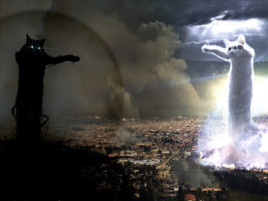
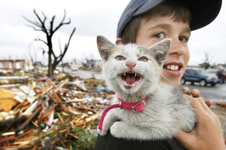
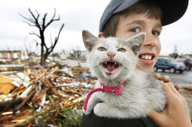

O GATO TORNADO

Tudo pode ser perdido caso você deixei seu bixinho de estimação isolado em lugares fechados.
O tédio é um dos principais fatores de instabilidade e risco proeminente de destruição
Tudo pode ser perdido caso você deixei seu bixinho de estimação isolado em lugares fechados.
O tédio é um dos principais fatores de instabilidade e risco proeminente de destruição
